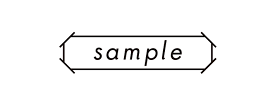

<nav class="navbar navbar-expand-lg navbar-light">
  <div class="container-fluid">
    <a class="navbar-brand" href="/">
      
    </a>
    <button type="button" class="navbar-toggler" data-bs-toggle="collapse" data-bs-target="#Navber"
      aria-controls="Navber" aria-expanded="false" aria-label="ナビゲーションの切替">
      <span class="navbar-toggler-icon"></span>
    </button>
    <div class="collapse navbar-collapse" id="Navber">
      <ul class="navbar-nav me-auto mb-2 mb-lg-0">
        <li class="nav-item">
          <a class="nav-link" routerLink="/">Top</a>
        </li>
        <li class="nav-item">
          <a class="nav-link" routerLink="/pages/about">About</a>
        <li class="nav-item">
          <a class="nav-link" routerLink="/pages/contact">お問い合わせ</a>
        </li>
        <div *ngIf="user$ | async as user">
          <li class="nav-item">
            <a class="nav-link" routerLink="/mypage">マイページ</a>
          </li>
        </div>

        <div *ngIf="user$ | async as user; else loginBlock">
          <li class="nav-item">
            <a class="nav-link logOut-button" (click)="logOut()">ログアウト</a>
          </li>
        </div>
      </ul>
    </div><!-- /.navbar-collapse -->
  </div>
</nav>


<ng-template #loginBlock>
  <li class="nav-item">
    <a class="nav-link" routerLink="/auth/sign-up">新規会員登録</a>
  </li>
  <li class="nav-item">
    <a class="nav-link" routerLink="/auth/sign-in">ログイン</a>
  </li>
</ng-template>
